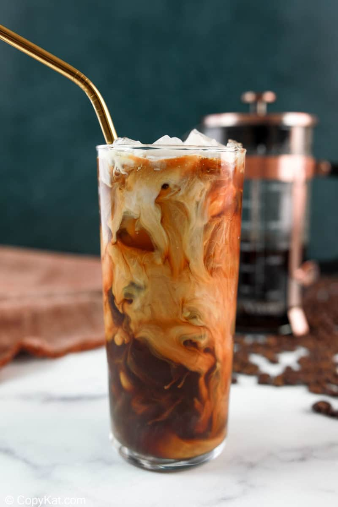

Starbucks Cold Brew with Vanilla Sweet Cream

Description
Starbucks took its delicious nitro cold-brewed coffee and topped it off with sweet cream flavored with vanilla. The combination makes a rich and creamy iced coffee drink you’ll want to enjoy over and over again.
But that can get expensive when getting it at the restaurant. So why not save money and make it at home? And you don’t need to get big bottles of expensive store-bought coffee syrup either.
All you need to do is to make vanilla simple syrup, mix it with milk and cream, and you have homemade vanilla sweet cream.
Then you’ll add that to cold brew coffee, which is also super easy to make. Just steep coffee grounds in cold water overnight. Find out more in my thorough guide on how to make cold brew coffee.
Ingredients
Cold Brew Coffee
- 16 ounces water
- 1/2 coarsely ground coffee
Vanilla Sweet Cream
- 2 cups sugar
- 1 cup water
- 1 TABLEspoon vanilla extract
- 1/2 cup 2% milk
- 1/2 cup heavy cream
Steps
Cold Brew Coffee
- Use either a French press or a large mason jar, add 16 ounces of water to the vessel.
- Add 1/2 cup of coarsely ground coffee.
- Place a lid on the container and refrigerate for at least 12 hours.
- After 12 hours, separate the coffee from the grounds.
- Store cold brew coffee in the refrigerator
Vanilla Sweet Cream Directions
- Prepare vanilla syrup by combining 2 cups of sugar and 1 cup of water in a small saucepan.
- Bring the mixture to a boil and cook just until the sugar dissolves.
- Remove the saucepan from the stove and let the sugar syrup cool to room temperature.
- Stir in vanilla. Store this vanilla syrup in an airtight container in the refrigerator.
- Make the vanilla sweet cream by combining the 2% milk, heavy cream, and 2 tablespoons of the prepared vanilla syrup in a small bowl. Stir well.
- If you do not use all of it immediately, store it in an airtight container in your refrigerator.